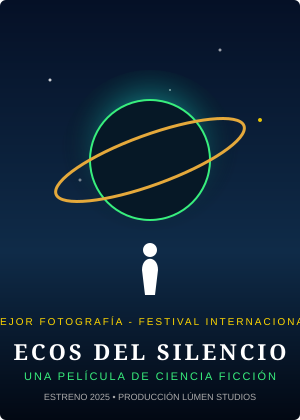
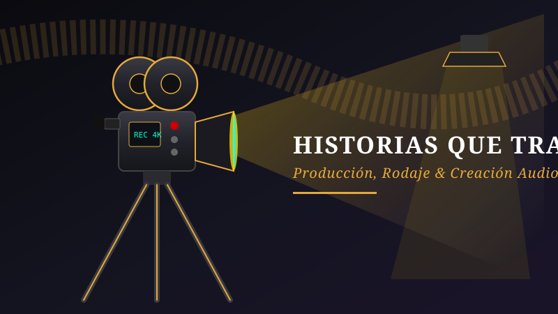
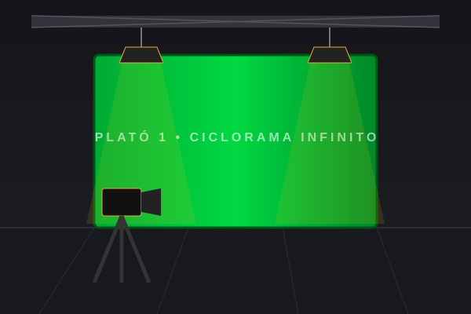

Producción Propia
Desarrollamos proyectos cinematográficos desde la fase embrionaria de guion hasta su distribución en festivales de clase A y salas comerciales.
El arte de narrar historias con luz, rigor y emoción

Somos una productora audiovisual independiente fundada en 2010. Desarrollamos largometrajes, cortometrajes de ficción y series documentales, además de ofrecer infraestructuras completas de plató, cámaras de gran formato y postproducción para cineastas de todo el mundo.
En Lúmen Studios entendemos el cine como una conjunción perfecta entre el oficio artesanal y la vanguardia técnica. Cada guion que seleccionamos responde a una búsqueda de autenticidad, profundidad psicológica y potencia visual. Creemos en dar voz a nuevos creadores y en dignificar los oficios cinematográficos en todas sus etapas de desarrollo.
«El cine no es un trozo de vida, sino un pedazo de pastel visual que transforma nuestra mirada sobre el mundo.»
— Declaración fundacional de Lúmen Studios

Desarrollamos proyectos cinematográficos desde la fase embrionaria de guion hasta su distribución en festivales de clase A y salas comerciales.

Ponemos a disposición de la industria más de 800 m² de platós insonorizados, cicloramas infinitos, ópticas anamórficas y material de iluminación de última generación.

Salas de montaje homologadas, etalonaje en DaVinci Resolve con monitores de masterización 4K HDR y mezclas de sonido envolvente en salas Dolby Atmos.
Cualquier producción audiovisual que emprende nuestra compañía atraviesa un flujo riguroso dividido en cinco etapas consecutivas: